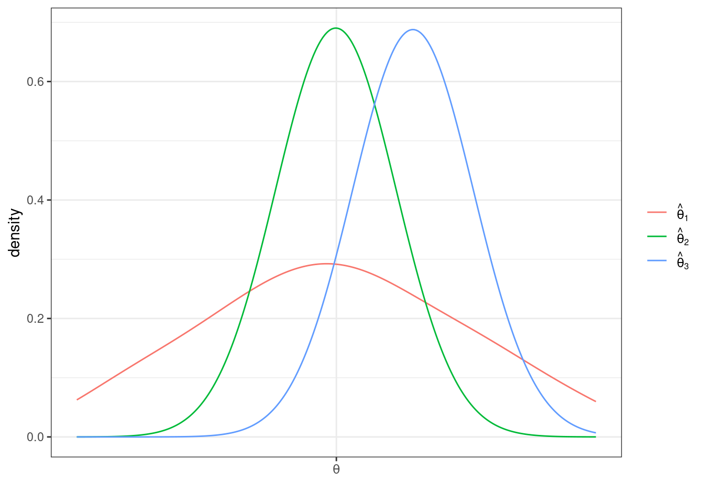

3.2 Topics in Statistics
So far, we have been talking about population quantities such as \(f_{Y|X}\) (conditional pdf/pmf), \(\mathbb{E}[Y]\) (expected value of \(Y\)), or \(\mathbb{E}[Y|X]\) (expected value of \(Y\) given \(X\)).
In practice, most often we do not know what these population quantities are equal to (with the exception of some trivial cases like flipping a coin or rolling a die).
A fundamental challenge is that it is uncommon that we observe the entire population.
Instead, we will take the approach that we have access to a sample of data from the original population. We’ll use the sample to try to estimate whatever population quantities we are interested in as well as develop the tools to conduct inference, paying particular interest to questions like: how precisely can we estimate particular population quantities of interest.
More broadly, statistics is the set of tools to learn about population quantities using data.
3.2.1 Simple Random Sample
SW 2.5
Let’s start by talking about how the data that we have access to is collected. There are several possibilities here, but let us start with the most straightforward case (which is also a very common case) called a simple random sample.
In math: \(\{Y_i\}_{i=1}^n\) is called a simple random sample if \(Y_1, Y_2, \ldots, Y_n\) are independent random variables with a common probability distribution \(f_Y\). The two key conditions here are (i) independence and (ii) from a common distribution. For this reason, you may sometimes see a random sample called an iid sample which stands for independent and identically distributed.
In words: We have access to \(n\) observations that are drawn at random from some underlying population and each observation is equally likely to be drawn.
3.2.2 Estimating \(\mathbb{E}[Y]\)
SW 2.5, 3.1
Let’s start with trying to estimate \(\mathbb{E}[Y]\) as this is probably the simplest, non-trivial thing that we can estimate.
A natural way to estimate population quantities is with their sample analogue. This is called the analogy principle. This is perhaps technical jargon, but it is the way you would immediately think to estimate \(\mathbb{E}[Y]\):
\[ \hat{\mathbb{E}}[Y] = \frac{1}{n} \sum_{i=1}^n Y_i = \bar{Y} \] In this course, we will typically put a “hat” on estimated quantities. The expression \(\displaystyle \frac{1}{n}\sum_{i=1}^n Y_i\) is just the average value of \(Y\) in our sample. Since we will calculate a ton of averages like this one over the course of the rest of the semester, it’s also convenient to give it a shorthand notation, which is what \(\bar{Y}\) means — it is just the sample average of \(Y\).
One thing that is important to be clear about at this point is that, in general, \(\mathbb{E}[Y] \neq \bar{Y}\). \(\mathbb{E}[Y]\) is a population quantity while \(\bar{Y}\) is a sample quantity. We will hope (and provide some related conditions/discussions below) that \(\bar{Y}\) would be close to \(\mathbb{E}[Y]\), but, in general, they will not be exactly the same.
3.2.3 Mean of \(\bar{Y}\)
SW 2.5, 3.1
Another important thing to notice about \(\bar{Y}\) is that it is a random variable (as it is the average of random variables). This is in sharp contrast to \(\mathbb{E}[Y]\) which is non-random.
One related thought experiment is the following: if we could repeatedly collect new samples of size \(n\) from the same population and each time were able to estimate \(\bar{Y}\), these estimates would be different from each other.
In fact, this means that \(\bar{Y}\) has a distribution. The distribution of a statistic, like \(\bar{Y}\), is called its sampling distribution. We’d like to know about the features of the sampling distribution. Let’s start with its mean. That is, let’s calculate
\[ \begin{aligned} \mathbb{E}[\bar{Y}] &= \mathbb{E}\left[ \frac{1}{n} \sum_{i=1}^n Y_i \right] \\ &= \frac{1}{n} \mathbb{E}\left[ \sum_{i=1}^n Y_i \right] \\ &= \frac{1}{n} \sum_{i=1}^n \mathbb{E}[Y_i] \\ &= \frac{1}{n} \sum_{i=1}^n \mathbb{E}[Y] \\ &= \frac{1}{n} n \mathbb{E}[Y] \\ &= \mathbb{E}[Y] \end{aligned} \] Let’s think carefully about each step here — the arguments rely heavily on the properties of expectations and summations that we have learned earlier. The first equality holds from the definition of \(\bar{Y}\). The second equality holds because \(1/n\) is a constant and can therefore come out of the expectation. The third equality holds because the expectation can pass through the sum. The fourth equality holds because \(Y_i\) are all from the same distribution which implies that they all of the same mean and that it is equal to \(\mathbb{E}[Y]\). The fifth equality holds because \(\mathbb{E}[Y]\) is a constant and we add it up \(n\) times. And the last equality just cancels the \(n\) in the numerator with the \(n\) in the denominator.
Before moving on, let me make an additional comment:
- The fourth equality might be a little confusing. Certainly it is not saying that all the \(Y_i\)’s are equal to each other. Rather, they come from the same distribution. For example, if you roll a die \(n\) times, you get different outcomes on different rolls, but they are all from the same distribution so that the population expectation of each roll is always 3.5, but you get different realizations on different particular rolls. Another example is if \(Y\) is a person’s income. Again, we are not saying that everyone has the same income, but just that we are thinking of income as being a draw from some distribution — sometimes you get a draw of a person with a very high income; other times you get a draw of a person with a low income, but \(\mathbb{E}[Y]\) is a feature of the underlying distribution itself where these draws come from.
How should interpret the above result? It says that, \(\mathbb{E}[\bar{Y}] = \mathbb{E}[Y]\). This doesn’t mean that \(\bar{Y}\) itself is equal to \(\mathbb{E}[Y]\). Rather, it means that, if we could repeatedly obtain (a huge number of times) new samples of size \(n\) and compute \(\bar{Y}\) each time, the average of \(\bar{Y}\) across repeated samples would be equal to \(\mathbb{E}[Y]\).
3.2.4 Variance of \(\bar{Y}\)
SW 2.5, 3.1
Next, let’s calculate the variance of \(\bar{Y}\). As before, we are continuing with the thought experiment of being able to repeatedly draw new samples of size \(n\), and, therefore, we call this variance the sampling variance.
\[ \begin{aligned} \mathrm{var}(\bar{Y}) &= \mathrm{var}\left(\frac{1}{n} \sum_{i=1}^n Y_i\right) \\ &= \frac{1}{n^2} \mathrm{var}\left(\sum_{i=1}^n Y_i\right) \\ &= \frac{1}{n^2} \left( \sum_{i=1}^n \mathrm{var}(Y_i) + \textrm{lots of covariance terms} \right) \\ &= \frac{1}{n^2} \left( \sum_{i=1}^n \mathrm{var}(Y_i) \right) \\ &= \frac{1}{n^2} \sum_{i=1}^n \mathrm{var}(Y) \\ &= \frac{1}{n^2} n \mathrm{var}(Y) \\ &= \frac{\mathrm{var}(Y)}{n} \end{aligned} \] Let’s go carefully through each step — these arguments rely heavily on the properties of variance that we talked about earlier. The first equality holds by the definition of \(\bar{Y}\). The second equality holds because \(1/n\) is a constant and can come out of the variance after squaring it. The third equality holds because the variance of the sum of random variables is equal to the sum of the variances plus all the covariances between the random variables. In the fourth equality, all of the covariance terms go away — this holds because of random sampling which implies that the \(Y_i\) are all independent which implies that their covariances are equal to 0. The fifth equality holds because all \(Y_i\) are identically distributed so their variances are all the same and equal to \(\mathrm{var}(Y)\). The sixth equality holds by adding up \(\mathrm{var}(Y)\) \(n\) times. The last equality holds by canceling the \(n\) in the numerator with one of the \(n\)’s in the denominator.
Interestingly, the variance of \(\bar{Y}\) depends not just on \(\mathrm{var}(Y)\) but also on \(n\) — the number of observations in the sample. Notice that \(n\) is in the denominator, so the variance of \(\bar{Y}\) will be lower for large values of \(n\). Here is an example that may be helpful for understanding this. Suppose that you are rolling a die. If \(n=1\), then clearly, the variance of \(\bar{Y}\) is just equal to the variance of \(Y\) — sometimes you roll extreme values like \(1\) or \(6\). Now, when you increase \(n\), say, to 10, then these extreme values of \(\bar{Y}\) are substantially less common. For \(\bar{Y}\) to be equal to \(6\) in this case, you’d need to roll 10 \(6\)’s in a row. This illustrates that the sampling variance of \(\bar{Y}\) is decreasing in \(n\). If this is not perfectly clear, we will look at some data soon, and I think that should confirm to you that the variance of \(\bar{Y}\) is decreasing in the sample size.
3.2.5 Properties of Estimators
SW 2.5, 3.1
Suppose we are interested in some population parameter \(\theta\) — we’ll write this pretty generically now, but it could be \(\mathbb{E}[Y]\) or \(\mathbb{E}[Y|X]\) or really any other population quantity that you’d like to estimate.
Also, suppose that we have access to a random sample of size \(n\) and we have some estimate of \(\theta\) that we’ll call \(\hat{\theta}\).
As before, we are going to consider the repeated sampling thought experiment where we imagine that we could repeatedly obtain new samples of size \(n\) and with each new sample calculate a new \(\hat{\theta}\). Under this thought experiment, \(\hat{\theta}\) would have a sampling distribution. One possibility for what it could look like is the following

In this case, values of \(\hat{\theta}\) are more common around 3 and 4, but it is not highly unusual to get a value of \(\hat{\theta}\) that is around 1 or 2 or 5 or 6 either.
The first property of an estimator that we will take about is called unbiasedness. An estimator \(\hat{\theta}\) is said to be unbiased if \(\mathbb{E}[\hat{\theta}] = \theta\). Alternatively, we can define the bias of an estimator as
\[ \textrm{Bias}(\hat{\theta}) = \mathbb{E}[\hat{\theta}] - \theta \] For example, if \(\textrm{Bias}(\hat{\theta}) > 0\), it means that, on average (in the repeated sampling thought experiment), our estimates of \(\theta\) would be greater than the actual value of \(\theta\).
In general, unbiasedness is a good property for an estimator to have. That being said, we can come up with examples of not-very-good unbiased estimators and good biased estimators, but all-else-equal, it is better for an estimator to be unbiased.
The next property of estimators that we will talk about is their sampling variance. This is just \(\mathrm{var}(\hat{\theta})\). In general, we would like estimators with low (or 0) bias and low sampling variance. Let me give an example
 This is a helpful figure for thinking about the properties of estimators. In this case, \(\hat{\theta}_1\) and \(\hat{\theta}_2\) are both unbiased (because their means are \(\theta\)) while \(\hat{\theta}_3\) is biased — it’s mean is greater than \(\theta\). On the other hand the sampling variance of \(\hat{\theta}_2\) and \(\hat{\theta}_3\) are about the same and both substantially smaller than for \(\hat{\theta}_1\). Clearly, \(\hat{\theta}_2\) is the best estimator of \(\theta\) out of the three. But which is the second best? It is not clear. \(\hat{\theta}_3\) systematically over-estimates \(\theta\), but since the variance is relatively small, the misses are systematic but tend to be relatively small. On the other hand, \(\hat{\theta}_1\) is, on average, equal to \(\theta\), but sometimes the estimate of \(\theta\) could be quite poor due to the large sampling variance.
3.2.6 Relative Efficiency
SW 3.1
If \(\hat{\theta}_1\) and \(\hat{\theta}_2\) are two unbiased estimators of \(\theta\), then \(\hat{\theta}_1\) is more efficient than \(\hat{\theta}_2\) if \(\mathrm{var}(\hat{\theta}_1) < \mathrm{var}(\hat{\theta}_2)\).
Relative efficiency gives us a way to rank unbiased estimators.
3.2.7 Mean Squared Error
More generally, two estimators can be compared by their mean squared error which is defined as
\[ \textrm{MSE}(\hat{\theta}) := \mathbb{E}\left[ (\hat{\theta} - \theta)^2\right] \]
The mean squared error of \(\hat{\theta}\) is the average “distance” between \(\hat{\theta}\) and \(\theta\) in the thought experiment of having repeated samples of size \(n\).
Another equivalent expression for the mean squared error is
\[ \textrm{MSE}(\hat{\theta}) = \textrm{Bias}(\hat{\theta})^2 + \mathrm{var}(\hat{\theta}) \] In other words, if we can figure out the bias and variance of \(\hat{\theta}\), then we can recover mean squared error.
Generally, we would like to choose estimators that have low mean squared error (this essentially means that they have low bias and variance). Moreover, mean squared error gives us a way to compare estimators that are potentially biased. [Also, notice that for unbiased estimators, comparing mean squared errors of different estimators just compares their variance (because the bias term is equal to 0), so this is a generalization of relative efficiency from the previous section.]
Example 3.12 Let’s compare three estimators of \(\mathbb{E}[Y]\) based on their mean squared error. Let’s consider the three following estimators
\[ \begin{aligned} \hat{\mu} &:= \frac{1}{n} \sum_{i=1}^n Y_i \\ \hat{\mu}_1 &:= Y_1 \\ \hat{\mu}_\lambda &:= \lambda \bar{Y} \quad \textrm{for some } \lambda > 0 \end{aligned} \] \(\hat{\mu}\) is just the sample average of \(Y\)’s that we have already discussed. \(\hat{\mu}_1\) is the (somewhat strange) estimator of \(\mathbb{E}[Y]\) that just uses the first observation in the data (regardless of the sample size). \(\hat{\mu}_\lambda\) is an estimator of \(\mathbb{E}[Y]\) that multiplies \(\bar{Y}\) by some positive constant \(\lambda\).
To calculate the mean squared error of each of these estimators, let’s calculate their means and their variances.
\[ \begin{aligned} \mathbb{E}[\hat{\mu}] &= \mathbb{E}[Y] \\ \mathbb{E}[\hat{\mu}_1] &= \mathbb{E}[Y_1] = \mathbb{E}[Y] \\ \mathbb{E}[\hat{\mu}_\lambda] &= \lambda \mathbb{E}[\bar{Y}] = \lambda \mathbb{E}[Y] \end{aligned} \] This means that \(\hat{\mu}\) and \(\hat{\mu}_1\) are both unbiased. \(\hat{\mu}_\lambda\) is biased (unless \(\lambda=1\) though this is a relatively uninteresting case as it would mean that \(\hat{\mu}_\lambda\) is exactly the same as \(\hat{\mu}\)) with \(\textrm{Bias}(\hat{\mu}_\lambda) = (\lambda - 1) \mathbb{E}[Y]\).
Next, let’s calculate the variance for each estimator
\[ \begin{aligned} \mathrm{var}(\hat{\mu}) &= \frac{\mathrm{var}(Y)}{n} \\ \mathrm{var}(\hat{\mu}_1) &= \mathrm{var}(Y_1) = \mathrm{var}(Y) \\ \mathrm{var}(\hat{\mu}_\lambda) &= \lambda^2 \mathrm{var}(\bar{Y}) = \lambda^2 \frac{\mathrm{var}(Y)}{n} \end{aligned} \] This means that we can now calculate mean squared error for each estimator.
\[ \begin{aligned} \textrm{MSE}(\hat{\mu}) &= \frac{\mathrm{var}{Y}}{n} \\ \textrm{MSE}(\hat{\mu}_1) &= \mathrm{var}(Y) \\ \textrm{MSE}(\hat{\mu}_\lambda) &= (\lambda-1)^2\mathbb{E}[Y]^2 + \lambda^2 \frac{\mathrm{var}(Y)}{n} \end{aligned} \] The first thing to notice is that \(\hat{\mu}\) dominates \(\hat{\mu}_1\) (where dominates means that there isn’t any scenario where you could make a reasonable case that \(\hat{\mu}_1\) is a better estimator) because its MSE is strictly lower (they tie only if \(n=1\) when they become the same estimator). This is probably not surprising — \(\hat{\mu}_1\) just throws away a lot of potentially useful information.
The more interesting case is \(\hat{\mu}_\lambda\). The first term is the bias term — it is greater than the bias from \(\hat{\mu}\) or \(\hat{\mu}_1\) because the bias of both of these is equal to 0. However, relative to \(\hat{\mu}\), the variance of \(\hat{\mu}_\lambda\) can be smaller when \(\lambda\) is less than 1. In fact, you can show that there are estimators that have smaller mean squared error than \(\hat{\mu}\) by choosing a \(\lambda\) that is smaller than (usually just slightly smaller than) 1. This sort of estimator would be biased, but are able to compensate introducing some bias by having smaller variance. For now, we won’t talk much about this sort of estimator (and stick to \(\bar{Y}\)), but this sort of estimator has the “flavor” of modern machine learning estimators that typically introduce some bias while reducing variance. One last comment: if you were to make a “bad” choice of \(\lambda\), \(\hat{\mu}_\lambda\) could have higher mean squared error than even \(\hat{\mu}_1\), so if you wanted to proceed this way, you’d have to choose \(\lambda\) with some care.
3.2.8 Large Sample Properties of Estimators
SW 2.6
Statistics/Econometrics often relies on “large sample” (meaning: the number of observations, \(n\), is large) properties of estimators.
Intuition: We generally expect that estimators that use a large number of observations will perform better than in the case with only a few observations.
The second goal of this section will be to introduce an approach to conduct hypothesis testing. In particular, we may have some theory and want a way to test whether or not the data that we have “is consistent with” the theory or not. These arguments typically involve either making strong assumptions or having a large sample — we’ll mainly study the large sample case as I think this is more useful.
3.2.8.1 Consistency
An estimator \(\hat{\theta}\) of \(\theta\) is said to be consistent if \(\hat{\theta}\) gets close to \(\theta\) for large values of \(n\).
The main tool for studying consistency is the law of large numbers. The law of large numbers says that sample averages converge to population averages as the sample size gets large. In math, this is
\[ \frac{1}{n} \sum_{i=1}^n Y_i \rightarrow \mathbb{E}[Y] \quad \textrm{as } n \rightarrow \infty \] In my view, the law of large numbers is very intuitive. If you have a large sample and calculate a sample average, it should be close to the population average.
Example 3.13 Let’s consider the same three estimators as before and whether or not they are consistent. First, the LLN implies that
\[ \hat{\mu} = \frac{1}{n} \sum_{i=1}^n Y_i \rightarrow \mathbb{E}[Y] \] This implies that \(\hat{\mu}\) is consistent. Next,
\[ \hat{\mu}_1 = Y_1 \] doesn’t change depending on the size of the sample (you just use the first observation), so this is not consistent. This is an example of an unbiased estimator that is not consistent. Next,
\[ \hat{\mu}_\lambda = \lambda \bar{Y} \rightarrow \lambda \mathbb{E}[Y] \neq \mathbb{E}[Y] \] which implies that (as long as \(\lambda\) doesn’t change with \(n\)), \(\hat{\mu}_{\lambda}\) is not consistent. Let’s give one more example. Consider the estimator
\[ \hat{\mu}_c := \bar{Y} + \frac{c}{n} \] where \(c\) is some constant (this is a strange estimate of \(\mathbb{E}[Y]\) where we take \(\bar{Y}\) and add a constant divided by the sample size). In this case,
\[ \hat{\mu}_c \rightarrow \mathbb{E}[Y] + 0 = \mathbb{E}[Y] \]
which implies that it is consistent. It is interesting to note that
\[ \mathbb{E}[\hat{\mu}_c] = \mathbb{E}[Y] + \frac{c}{n} \] which implies that it is biased. This is an example of a biased estimator that is consistent.
3.2.8.2 Asymptotic Normality
The next large sample property that we’ll talk about is asymptotic normality. This is a hard one to wrap your mind around, but I’ll try to explain as clearly as possible. We’ll start by talking about what it is, and then we’ll move to why it’s useful.
Most of the estimators that we will talk about this semester have the following property
\[ \sqrt{n}\left( \hat{\theta} - \theta \right) \rightarrow N(0,V) \quad \textrm{as } n \rightarrow \infty \] In words, what this says is that we can learn something about the sampling distribution of \(\hat{\theta}\) as long as we have a large enough sample. More specifically, if \(\hat{\theta}\) is asymptotically normal, it means that if we take \(\hat{\theta}\) subtract the true value of the parameter \(\theta\) (this is often referred to as “centering”) and multiply by \(\sqrt{n}\), then that object (as long as the sample size is large enough) will seem like a draw from a normal distribution with mean 0 and variance \(V\). Since we know lots about normal distributions, we’ll be able to exploit this in very useful ways in the next section.
An equivalent, alternative expression that is sometimes useful is
\[ \frac{\sqrt{n}\left( \hat{\theta} - \theta\right)}{\sqrt{V}} \rightarrow N(0,1) \quad \textrm{as } n \rightarrow \infty \]
To establish asymptotic normality of a particular estimator, the main tool is the central limit theorem. The central limit theorem (sometimes abbreviated CLT) says that
\[ \sqrt{n}\left( \frac{1}{n} \sum_{i=1}^n Y_i - \mathbb{E}[Y]\right) \rightarrow N(0,V) \quad \textrm{as } n \rightarrow \infty \] where \(V = \mathrm{var}(Y)\).
In words, the CLT says that if you take the difference between \(\bar{Y}\) and \(\mathbb{E}[Y]\) (which, by the LLN converges to 0 as \(n \rightarrow \infty\)) and “scale it up” by \(\sqrt{n}\) (which goes to \(\infty\) as \(n \rightarrow \infty\)), then \(\sqrt{n}(\bar{Y} - \mathbb{E}[Y])\) will act like a draw from a normal distribution with variance \(\mathrm{var}(Y)\).
There are a few things to point out:
Just to start with, this is not nearly as “natural” a result as the LLN. The LLN basically makes perfect sense. For me, I know how to prove the CLT (though we are not going to do it in class), but I don’t think that I would have ever been able to come up with this on my own.
Notice that the CLT does not rely on any distributional assumptions. We do not need to assume that \(Y\) follows a normal distribution and it will apply when \(Y\) follows any distribution (up to some relatively minor technical conditions that we will not worry about).
It is also quite remarkable. We usually have the sense that as the sample size gets large that things will converge to something (e.g., LLN saying that sample averages converge to population averages) or that they will diverge (i.e., go off to positive or negative infinity themselves). The CLT provides an intermediate case — \(\sqrt{n}(\bar{Y} - \mathbb{E}[Y])\) is neither converging to a particular value or diverging to infinity. Instead, it is converging in distribution — meaning: it is settling down to something that looks like a draw from some distribution rather than converging to a particular number. In some sense, you can think of this as a “tie” between the part \((\bar{Y}-\mathbb{E}[Y])\) which, by itself, is converging to 0, and \(\sqrt{n}\) which, by itself, is diverging to infinity. In fact, if you multiplied instead by something somewhat smaller, say, \(n^{1/3}\), then the term \((\bar{Y}-\mathbb{E}[Y])\) would “win” and the whole expression would converge to 0. On the other hand, if you multiplied by something somewhat larger, say, \(n\), then the \(n\) part would “win” and the whole thing would diverge. \(\sqrt{n}\) turns out to be “just right” so that there is essentially a “tie” and this term neither converges to a particular number nor diverges.
A very common question for students is: “how large does \(n\) need to be for the central limit theorem to apply?” Unfortunately, there is a not a great answer to this (though some textbooks have sometimes given explicit numbers here). Here is a basic explanation for why it is hard to give a definite number. Suppose \(Y\) follows a normal distribution, then it will not take many observations for the normal approximation to hold. On the other hand, if \(Y\) were to come from a discrete distribution or just a generally complicated distribution, then it might take many more observations for the normal approximation to hold.
All that to say, I know that the CLT is hard to understand, but the flip-side of that is that it really is a fascinating result. We’ll see how its useful next.
3.2.9 Inference / Hypothesis Testing
SW 3.2, 3.3
Often in statistics/econometrics, we have some theory that we would like to test. Pretty soon, we will be interested in testing a theory like: some economic policy had no effect on some outcome of interest.
In this section, we’ll focus on the relatively simple case of conducting inference on \(\mathbb{E}[Y]\), but very similar arguments will apply when we try to start estimating more complicated things soon. Because we’re just focusing on \(\mathbb{E}[Y]\), the examples in this section may be a somewhat trivial/uninteresting, but I want us to learn some mechanics, and then we’ll be able to apply these in more complicated situations.
Let’s start with defining some terms.
Null Hypothesis This is the hypothesis (or theory) that we want to test. We’ll often write it in the following way
\[ H_0 : \mathbb{E}[Y] = \mu_0 \] where \(\mu_0\) is some actual number (e.g., 0 or 10 or just whatever coincides with the theory you want to test).
Alternative Hypothesis This is what is true if \(H_0\) is not. There are other possibilities, but I think the only alternative hypothesis that we will consider this semester is
\[ H_1 : \mathbb{E}[Y] \neq \mu_0 \] i.e., that \(\mathbb{E}[Y]\) is not equal to the particular value \(\mu_0\).
The key conceptual issue is that, even if the null hypothesis is true, because we estimate \(\mathbb{E}[Y]\) with a sample, it will generally be the case that \(\bar{Y} \neq \mu_0\). This is just the nature of trying to estimate things with a sample.
What we are going to go for is essentially trying to tell the difference (or at least be able to weigh the evidence) regarding whether the difference between \(\bar{Y}\) and \(\mu_0\) can be fully explained by sampling variation or that the difference is “too big” to be explained by sampling variation. Things will start to get “mathy” in this section, but I think it is helpful to just hold this high-level idea in your head as we go along.
Next, let’s define the standard error of an estimator. Suppose that we know that our estimator is asymptotically normal so that
\[ \sqrt{n}(\hat{\theta} - \theta) \rightarrow N(0,V) \quad \textrm{as } n \rightarrow \infty \] Then, we define the standard error of \(\hat{\theta}\) as
\[ \textrm{s.e.}(\hat{\theta}) := \frac{\sqrt{\hat{V}}}{\sqrt{n}} \] which is just the square root of the estimate of the asymptotic variance \(V\) divided by the square root of the sample size. For example, in the case where we are trying to estimate \(\mathbb{E}[Y]\), recall that, by the CLT, \(\sqrt{n}(\bar{Y} - \mathbb{E}[Y]) \rightarrow N(0,V)\) where \(V=\mathrm{var}(Y)\), so that
\[
\textrm{s.e.}(\bar{Y}) = \frac{\sqrt{\widehat{\mathrm{var}}(Y)}}{\sqrt{n}}
\]
where \(\widehat{\mathrm{var}}(Y)\) is just an estimate of the variance of \(Y\), i.e., just run var(Y) in R.
Over the next few sections, we are going to consider several different way to conduct inference (i.e., weigh the evidence) about some theory (i.e., the null hypothesis) using the data that we have. For all of the approaches that we consider below, the key ingredients are going to an estimate of the parameter of interest (e.g., \(\bar{Y}\)), the value of \(\mu_0\) coming from the null hypothesis, and the standard error of the estimator.
3.2.9.1 t-statistics
A t-statistic is given by
\[ t = \frac{\sqrt{n} (\bar{Y} - \mu_0)}{\sqrt{\hat{V}}} \] Alternatively (from the definition of standard error), we can write
\[ t = \frac{(\bar{Y} - \mu_0)}{\textrm{s.e.}(\bar{Y})} \] though I’ll tend to use the first expression, just because I think it makes the arguments below slightly more clear.
Notice that \(t\) is something that we can calculate with our available data. \(\sqrt{n}\) is the square root of the sample size, \(\bar{Y}\) is the sample average of \(Y\), \(\mu_0\) is a number (that we have picked) coming from the null hypothesis, and \(\hat{V}\) is the sample variance of \(Y\) (e.g., computed with var(Y) in R).
Now, here is the interesting thing about t-statistics. If the null hypothesis is true, then
\[ t = \frac{\sqrt{n} (\bar{Y} - \mathbb{E}[Y])}{\sqrt{\hat{V}}} \approx \frac{\sqrt{n} (\bar{Y} - \mathbb{E}[Y])}{\sqrt{V}} \]
where we have substituted in \(\mathbb{E}[Y]\) for \(\mu_0\) (due to \(H_0\) being true) and then replaced \(\hat{V}\) with \(V\) (which holds under the law of large numbers). This is something that we can apply the CLT to, and, in particular, if \(H_0\) holds, then \[ t \rightarrow N(0,1) \] That is, if \(H_0\) is true, then \(t\) should look like a draw from a normal distribution.
Now, let’s think about what happens when the null hypothesis isn’t true. Then, we can write
\[ t = \frac{\sqrt{n} (\bar{Y} - \mu_0)}{\sqrt{\hat{V}}} \] which is just the definition of \(t\), but something different will happen here. In order for \(t\) to follow a normal distribution, we need \((\bar{Y} - \mu_0)\) to converge to 0. But \(\bar{Y}\) converges to \(\mathbb{E}[Y]\), and if the null hypothesis does not hold, then \(\mathbb{E}[Y] \neq \mu_0\) which implies that \((\bar{Y} - \mu_0) \rightarrow (\mathbb{E}[Y] - \mu_0) \neq 0\) as \(n \rightarrow \infty\). It’s still the case that \(\sqrt{n} \rightarrow \infty\). Thus, if \(H_0\) is not true, then \(t\) will diverge (recall: this means that it will either go to positive infinity or negative infinity depending on the sign of \((\mathbb{E}[Y] - \mu_0)\)).
This gives us a very good way to start to think about whether or not the data is compatible with our theory. For example, suppose that you calculate \(t\) (using your data and under your null hypothesis) and that it is equal to 1. 1 is not an “unusual” looking draw from a standard normal distribution — this suggests that you at least do not have strong evidence from data against your theory. Alternatively, suppose that you calculate that \(t=-24\). While its technically possible that you could draw \(-24\) from a standard normal distribution — it is exceedingly unlikely. We would interpret this as strong evidence against the null hypothesis, and it should probably lead you to “reject” the null hypothesis.
We have talked about some clear cases, but what about the “close calls”? Suppose you calculate that \(t=2\). Under the null hypothesis, there is about a 4.6% chance of getting a t-statistic at least this large (in absolute value). So…if \(H_0\) is true, this is a fairly unusual t-statistic, but it is not extremely unusual. What should you do?
Before we decide what to do, let’s introduce a little more terminology regarding what could go wrong with hypothesis testing. There are two ways that we could go wrong:
Type I Error — This would be to reject \(H_0\) when \(H_0\) is true
Type II Error — This would be to fail to reject \(H_0\) when \(H_0\) is false
Clearly, there is a tradeoff here. If you are really concerned with type I errors, you can be very cautious about rejecting \(H_0\). If you are very concerned about type II errors, you could aggressively reject \(H_0\). The traditional approach to trading these off in statistics is to pre-specify a significance level indicating what percentage of the time you are willing to commit a type I error. Usually the significance level is denoted by \(\alpha\) and the most common choice of \(\alpha\) is 0.05 and other common choices are \(\alpha=0.1\) or \(\alpha=0.01\). Then, good statistical tests try to make as few type II errors as possible subject to the constraint on the rate of type I errors.
Often, once you have specified a significance level, it comes with a critical value. The critical value is the value of a test statistic for which the test just rejects \(H_0\).
In practice, this leads to the following decision rule:
Reject \(H_0\) if \(|t| > c_{1-\alpha}\) where \(c_{1-\alpha}\) is the critical value corresponding to the significance level \(\alpha\).
Fail to reject \(H_0\) if \(|t| < c_{1-\alpha}\)
In our case, since \(t\) follows a normal distribution under \(H_0\), the corresponding critical value (when \(\alpha=0.05\)) is 1.96. In particular, recall what the pdf of a standard normal random variable looks like

The sum of the two blue, shaded areas is 0.05. In other words, under \(H_0\), there is a 5% chance that, by chance, \(t\) would fall in the shaded areas. If you want to change the significance level, it would result in a corresponding change in the critical value so that the area in the new shaded region would adjust too. For example, if you set the significance level to be \(\alpha=0.1\), then you would need to adjust the critical value to be 1.64, and if you set \(\alpha=0.01\), then you would need to adjust the critical value to be 2.58.
3.2.9.2 P-values
Choosing a significance level is somewhat arbitrary. What did we choose 5%?
Perhaps more importantly, we are essentially throwing away a lot of information if we are to reduce the information from standard errors/t-statistics to a binary “reject” or “fail to reject”.
One alternative is to report a p-value. A p-value is the probability of observing a t-statistic as “extreme” as we did if \(H_0\) were true.
Here is an example of how to calculate a p-value. Suppose we calculate \(t=1.85\). Then,

Then, under \(H_0\), the probability of getting a t-statistic “as extreme” as 1.85 corresponds to the area of the two shaded regions above. In other words, we need to to compute
\[ \textrm{p-value} = \mathrm{P}(Z \leq -1.85) + \mathrm{P}(Z \geq 1.85) \] where \(Z \sim N(0,1)\). One thing that is helpful to notice here is that, a standard normal random variable is symmetric. This means that \(\mathrm{P}(Z \leq -1.85) = \mathrm{P}(Z \geq 1.85)\). We also typically denote the cdf of a standard normal random variable with the symbol \(\Phi\). Thus,
\[
\textrm{p-value} = 2 \Phi(-1.85)
\]
I don’t know what this is off the top of my head, but it is easy to compute from a table or using R. In R, you can use the function pnorm — here, the p-value is given by 2*pnorm(-1.85) which is equal to 0.064.
More generally, if you calculate a t-statistic, \(t\), using your data and under \(H_0\), then,
\[ \textrm{p-value} = 2 \Phi(-|t|) \]
3.2.9.3 Confidence Interval
Another idea is to report a \((1-\alpha)\%\) (e.g., 95%) confidence interval.
The interpretation of a confidence interval is a bit subtle. It is this: if we collected a large number of samples, and computed a confidence interval each time, 95% of these would contain the true value. This is subtly different than: there is a 95% probability that \(\theta\) (the population parameter of interest) falls within the confidence interval — this second interpretation doesn’t make sense because \(\theta\) is non-random.
A 95% confidence interval is given by
\[ CI_{95\%} = \left[\hat{\theta} - 1.96 \ \textrm{s.e.}(\hat{\theta}), \hat{\theta} + 1.96 \ \textrm{s.e.}(\hat{\theta})\right] \]
For the particular case where we are interested in \(\mathbb{E}[Y]\), this becomes
\[ CI_{95\%} = \left[ \bar{Y} - 1.96 \ \textrm{s.e.}(\bar{Y}), \bar{Y} + 1.96 \ \textrm{s.e.}(\bar{Y}) \right] \]
3.2.9.4 Inference in Practice
I have covered the main approaches to inference in this section. I’d like to make a couple of concluding comments. First, all of the approaches discussed here (standard errors, t-statistics, p-values, and confidence intervals) are very closely related (in some sense, they are just alternative ways to report the same information). They all rely heavily on establishing asymptotic normality of the estimate of the parameter of interest — in fact, this is why we were interested in asymptotic normality in the first place. My sense is that the most common thing to report (at least in economics) is an estimate of the parameter of interest (e.g., \(\hat{\theta}\) or \(\bar{Y}\)) along with its standard error. If you know this information, you (or your reader) can easily compute any of the other expressions that we’ve considered in this section.
Another important thing to mention is that there is often a distinction between statistical significance and economic significance.
In the next chapter, we’ll start to think about the effect of one variable on another (e.g., the effect of some economic policy on some outcome of interest). By far the most common null hypothesis in this case is that “the effect” is equal to 0. However, in economics/social sciences/business applications, there probably aren’t too many cases where (i) it would be interesting enough to consider the effect of one variable on another (ii) while simultaneously the effect is literally equal to 0. Since, all else equal, standard errors get smaller with more observations, as datasets in economics tend to get larger over time, we tend to find more statistically significant effects. This doesn’t mean that effects are getting bigger or more important — just that we are able to detect smaller and smaller effects if we have enough data. And most questions in economics involve more than just answering the binary question: does variable \(X\) have any effect at all on variable \(Y\)? For example, if you are trying to evaluate the effect of some economic policy, it is usually more helpful to think in terms of a cost-benefit analysis — what are the benefits or the policy relative to the costs and these sorts of comparisons inherently involve thinking about magnitudes of effects.
A more succinct way to say all this is: the effect of one variable on another can be both “statistically significant” and “economically” small at the same time. Alternatively, if you do not have much data or the data is very “noisy”, it may be possible that there are relatively large effects, but that the estimates are not statistically significant (i.e., you are not able to detect them very well with the data that you have). Therefore, it is important to not become too fixated on statistical significance and to additionally think carefully about the magnitudes of estimates.
3.2.10 Coding
In this section, we’ll use the acs data to calculate an estimate of average wage/salary income among employed individuals in the United States. We’ll test the null hypothesis that the mean income in the United States is $50,000 as well as report the standard error of our estimate of mean income, as well as corresponding p-values, t-statistics, and 95% confidence interval. Finally, we’ll report a table of summary statistics using the modelsummary package separately by college graduates relative to non-college graduates.
load("data/acs.RData")
# estimate of mean income
ybar <- mean(acs$incwage)
ybar
#> [1] 59263.46
# calculate standard error
V <- var(acs$incwage)
n <- nrow(acs)
se <- sqrt(V) / sqrt(n)
se
#> [1] 713.8138
# calculate t-statistic
t_stat <- (ybar - 50000) / se
t_stat
#> [1] 12.97742This clearly exceeds 1.96 (or any common critical value) which implies that we would reject the null hypothesis that mean income is equal to $50,000.
The p-value is essentially equal to 0. This is expected given the value of the t-statistic that we calculated earlier.
# 95% confidence interval
ci_L <- ybar - 1.96*se
ci_U <- ybar + 1.96*se
paste0("[",round(ci_L,1),",",round(ci_U,1),"]")
#> [1] "[57864.4,60662.5]"library(modelsummary)
library(dplyr)
# create a factor variable for going to college
acs$col <- ifelse(acs$educ >= 16, "college", "non-college")
acs$col <- as.factor(acs$col)
acs$female <- 1*(acs$sex==2)
acs$incwage <- acs$incwage/1000
datasummary_balance(~ col, data=dplyr::select(acs, incwage, female, age, col),
fmt=2)| Mean | Std. Dev. | Mean | Std. Dev. | Diff. in Means | Std. Error | |
|---|---|---|---|---|---|---|
| incwage | 89.69 | 96.15 | 40.05 | 39.01 | −49.65 | 1.62 |
| female | 0.51 | 0.50 | 0.46 | 0.50 | −0.04 | 0.01 |
| age | 44.38 | 13.43 | 42.80 | 15.71 | −1.58 | 0.29 |
Side-Comment: I think it is worth quickly explaining where the second expression for \(\textrm{MSE}(\hat{\theta})\) comes from. Starting from the definition of \(\textrm{MSE}(\hat{\theta})\),
\[ \begin{aligned} \textrm{MSE}(\hat{\theta}) &= \mathbb{E}\left[ (\hat{\theta} - \theta)^2\right] \\ &= \mathbb{E}\left[ \left( (\hat{\theta} - \mathbb{E}[\hat{\theta}]) + (\mathbb{E}[\hat{\theta}] - \theta)\right)^2 \right] \\ &= \mathbb{E}\left[ (\hat{\theta} - \mathbb{E}[\hat{\theta}])^2 \right] + \mathbb{E}\left[ (\mathbb{E}[\hat{\theta}] - \theta)^2\right] + 2 \mathbb{E}\left[ (\hat{\theta} - \mathbb{E}[\hat{\theta}])(\mathbb{E}[\hat{\theta}] - \theta) \right] \\ &= \mathrm{var}(\hat{\theta}) + \textrm{Bias}(\hat{\theta})^2 \end{aligned} \] where the first equality is just the definition of \(\textrm{MSE}(\hat{\theta})\), the second equality adds and subtracts \(\mathbb{E}[\hat{\theta}]\), the third equality squares everything in parentheses from the previous line and pushes the expectation through the sum. For the last equality, the first term in the previous line corresponds to the definition of \(\mathrm{var}(\hat{\theta})\); for the second term, recall that \(\textrm{Bias}(\hat{\theta}) = \mathbb{E}[\hat{\theta}-\theta]\) (and this is non-random so the outside expectation just goes away); the last term is equal to 0 which just holds by the properties of expectations after noticing that \((\mathbb{E}[\hat{\theta}] - \theta)\) is non-random and can therefore come out of the expectation.